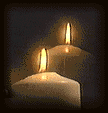
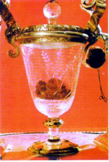
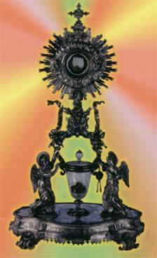
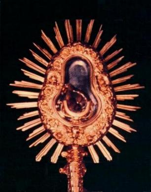
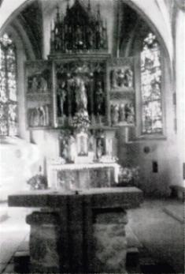
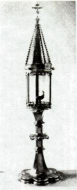

Existent plus de cinquante Miracles Eucharistiques qui s'ont passé sur les plusieurs payses dès le siècle VIII à nos jours. Chaque événement est bien différent un de l'autre, et chaque histoire est le plus jolie et fascinante. C'est parce que, tout qui a une relation avec l'Eucharistie indubitablement a une valeur incommensurable, car se réfère à nous DIEU. Mais comme le espace ici est petit, nous allons rehausser seule quelques faits, avec l'intention de graver dans tous les cÅ“urs, la certitude de la sérieux du sujet, de la beauté du contenu et au-dessus de tout, de la réalité de la Présence du propre DIEU Vivant et Vrai, qui reste près de nous, disponible dans tous les Tabernacles du monde, par proportionner bonheur et bien-être dans cette vie, et nous concéder une confortable habitation dans l'éternité, dans SON glorieux Royaume d'Amour.

LANCIANO, Italie, année 700,
Lanciano c'est une ville médiévale baignée pour la mer Adriatique, en Italie, parmi les villes de San Giovanni Rotondo et Loreto.
Anciennement avait la dénomination de «Anxanum». Le changement de nom par «Lanciano» a été avec la finalité de perpétuer un hommage au Centurion Longinus, qui est né là, d'accord avec la tradition. Il a été le Centurion qui a cloué son lance de soldat, dans le flanc droit de JÉSUS crucifié, pour voir si LUI encore était vivant, conforme Saint Jean a décrit dans son Évangile. (Jean 19,34)
Dans la séquence des années, en face du grand nombre d'événements que se ont passés dans la vie du Centurion, ils sont réveillés son esprit et l'ont conduit par le chemin de la conversion. Longinus s'est repenti de son péché et s'est converti au Christianisme. Le DIEU a pardonné le son sacrilège abominable et lui, au le long de sa vie a démontré qui était un neuf homme, en cultivant une grande amitié et un immense amour à JÉSUS. L'Église a reconnu la notable transformation spirituelle qui a sanctifié la vie de lui et l'a placé parmi les Saints. Il est connu par Sain Longinus et son image est dans le Vatican, dans l'Église de Saint Sépulcre, dans Jérusalem et dans plusieurs autres autels du monde. Sa Fête est commémorée dans le 15 Mars.
À ce temps dans que s'est passé le Miracle qui nous allons décrire, l'Église de Lanciano était sous la protection des Saints Legonciano et Domiciano, et il était administré par les Moines Basiliens du Rite Grec Orthodoxe.
Un Moine de l'Ordre de Sain Basilic, personne sage dans les choses du monde cependant il hésitait dans les choses de la foi, il traversait une période terrible de trouble spirituel de tel d'ordre qui a été emmené à douter de la Présence Real de NOTRE SEIGNEUR JÉSUS CHRISTO dans l'Hostie Consacré. Mais il luttait contre cette tentation abominable et priait, en demandant au CRÉATEUR qui ait illuminé son esprit et le ait libéré de ce doute cruel et de la peur qui a envahi sa conscience, qui le faisait pour imaginer être en perdant sa vocation sacerdotale. Toutefois il était un homme faible avec sa volonté ! Combien plus se passaient les jours, le son drame de l'intérieur plus augmentait d'intensité et affectait le son état de disposition, en volant jusqu'à le plaisir de vivre.
De l'autre côté, la situation du monde dans ce temps ne l'aidait pas en rien pour fortifier sa foi. Il y avait beaucoup d'hérésies disséminées partout, lesquels étaient accueils pour laïques et gens de l'Église. Diverses Évêques et Prêtres ont accepté ces doctrines sans une réflexion adulte et plus profonde. Alors régnait une confusion terrible d'idées, qui laissait doute dans les esprits de beaucoup des fidèles et personnes religieuses, en résultant un grand mal-être et incompréhensions parmi les catholiques.
Dans certain matin, comme
habituellement il faisait, était en célébrant une Saint Messe, quand il a été
attaqué par une vague indisciplinée de doutes. Avec honte de son propre procédé,
a regardé défiant pour l'Hostie et pour le Vin qui étaient à son devant et qu'il avait
commencé à prier la Consécration. De soudain, ses mains ont secoué et son corps
a été enveloppé par une émotion vigoureuse et profonde. Il est resté immobile,
dans silence, de dos pour les gens 
"Ó témoin heureux, à qui le DIEU TRÈS SAINT, par détruire mon manque de foi, a voulu SE révéler à Lui-même dans ce Béni Sacrement et SE faire visible devant nos yeux. Veniez vous des frères et sÅ“urs, veniez vous tous et se émerveilliez avec notre DIEU tant proche de nous. Venez contempler le Corps et le Sang Vrai de notre l'aimé LE CHRIST."
L'Hostie avait s'est transformé dans le Corps et le Vin s'est transformé dans Sang du SEIGNEUR.
Les personnes qui ont témoigné le Miracle, se ont montré enthousiasmées et surprises, remplis de bonheur pour la infinie gentillesse Divine dans les proportionner telle extraordinaire manifestation. Pour cela, ils criaient pardon et miséricorde pour ses vies, s'en déclarant indignes de témoigner si grandiose et touchant Miracle.
Avec le avancer des heures, ils sont partis à ses maisons et ils ont divulgué les admirables nouvelles par où sont passés. Dans le peu de temps, la ville entière savait sur la notable manifestation surnaturelle et ils ont coulé à l'Église, centaines et milliers de gens qui ont rempli toutes les dépendances du temple Chrétien, parce que toutes les personnes étaient avides pour voir le Corps et le Sang de JÉSUS.
Le Miracle s'est passé dans l'année 700 et il a causé un effet admirable, parce que il a opéré de une façon prépondérant sur la foi de ce Prêtre Basilien et sur la foi de beaucoup des personnes froides et indifférents, qu'ils ne croyaient pas dans le Sacrée Eucharistie, dans le Présence Royal et Vraie de JESUS dans Corps, Sang, Âme et Divinité, dans l'Hostie et dans le Vin Consacré.
C'est important rehausser qui dès la date de l'événement, l'Église a accueilli le Miracle comme "un vrai Signe du Ciel" et il vénère le Corps et le Sang du SEIGNEUR dans les processions qui annuellement sont réalisées en le jour de la Fête, le dernier dimanche du mois d'octobre.
Initialement le Miracle a été conservé dans un artistique reliquaire en ivoire. Plus tard il a été placé dans un Ostensoir magnifique d'or.
Le Sang du SEIGNEUR dans le moment du Miracle a coagulé dans cinq portions, comme se ils aient été cinq balles. Et elles possèdent une propriété incroyable: chaque balle de sang coagulé a le même poids qui les autres ensembles.
Le Sang a acquis une
couleur brun-rouge et la Viande est avec une couleur de grenat-obscurité.
Cependant, quand une lampe est placée pour en arrière de la Viande, elle
acquiert une couleur rose.
une lampe est placée pour en arrière de la Viande, elle
acquiert une couleur rose.
L'Église de Lanciano est restée sous la garde des Moines de Sain Basilien jusqu'à 1176, quand les Prêtres Bénédictins ont assumé jusqu'à 1252. Dans suite ils sont venus les Franciscains et ils ont dû faire beaucoup de travaux, parce que la structure du temple était avec problèmes.
En 1258, les Franciscains ont construit une nouvelle Église, dans la place de la vieux, et ils l'ont placé le Temple sous la protection de San Francisco.
En 1515 le Papa Lion X a implanté dans Lanciano une Épiscopat et en 1562, le Pape Pio IV a émis un Bulle qui l'a élevé à la condition d'Archevêché.
En 1887 l'Archevêque de Lanciano, Monseigneur Pétrarque, a obtenu du Papa Lion XIII, l'indulgence plénière perpétuelle pour qui visiter le Miracle Eucharistique dans la période de la Fête, dans le dernier dimanche d'octobre et aussi dans les huit jours suivants, de l'octave, dans lesquelles aussi se passent les célébrations dans honneur du Sang et du Corps de NOTRE SEIGNEUR.
Dans 1566, avec la menace de l'invasion par les Turcs, Frère Giovanni António de Mastro Renzo et ses compagnons, ils ont construit un Chapelle spécial et bien protégée, le Chapelle Valsecca où a été abrité avec sécurité le Miracle Eucharistique de JÉSUS. Là il est resté jusqu'à l'année 1902, quand ils ont construit un Autel magnifique avec deux Tabernacles: le supérieur, où ils ont placé l'Ostensoir Spécial avec le Miracle et l'inférieur, qui c'est le Tabernacle avec les Hosties Consacrées dans les Saints Messes, lesquelles sont consommés par les fidèles. Pour la partie d'en arrière, il y a un petit escalier et est juste à travers de ce accès, qui les visiteurs peuvent apprécier et admirer bien proche le extraordinaire Miracle.
L'émotion de la visite est toujours grande et il proportionne des manifestations spontanées qui attestent l'admiration et la commotion des gens devant du propre DIEU.

1" Le Viande est de vraie viande humaine.
2" Le Viande est un morceau du tissu musculaire du cœur (myocarde).
3" Le sang aussi est humain.
4" La Viande et le Sang sont du même type sanguin: "AB".
5" Sur le Sang se rencontrent des protéines dans la même proportion qui sont dans un sang humain vif.
6" Sur le Sang aussi se rencontrent des sels minéraux dans proportionnes identiques à ces de un sang humain normal: quantité déterminée de chlore, phosphore, magnésium, potassium, sodium et de calcium.
7" La préservation de la Viande et du Sang pour 12 siècles, sans l'aide de aucun conservant ou ingrédient chimique, est parfait et admirable.

SANTARÉM, Portugal, année 1247

En voulant sauver son mariage, elle a entendu la suggestion des amis et il a cherché l'orientation et le service d'un sorcier. Le ensorceleur bientôt lui a promis succès, en disant qui changerait la conduite de son mari, si elle ait suivi ses recommandations. Et a demandé que la femme ait emmené pour elle, une Hostie Consacré. Dû au l'effroi de la femme, le magicien l'a instruit avec un truqué: pour communiquer une fausse maladie à l'Église, et alors, elle serait autorisée à recevoir la Communion pendant la semaine et ainsi, elle aurait l'occasion de prendre l'Hostie Consacré et emmener pour faire le travail. La femme était dans panique, le peur a envahi son idée, parce qu'elle savait cet être un sacrilège. Pour cela, elle est restée dans silence, n'a dit pas rien.
Elle a laissé la présence du sorcier et pour le long temps il n'est pas revenu, c'était en pensant dans cette demande étrange et essayait de résoudre le doute qui affligeait son cÅ“ur. Finalement, en imaginant la possibilité convertir le mari et de atteindre le rêvée bonheur qui cherchait pour sa vie matrimoniale, elle a décidé et a inventé un grand mensonge. Elle a exposé au prêtre qui était très malade et nécessitait de recevoir JÉSUS dans le Sacrement Très Saint. Le prêtre de la paroisse a alloué la licence et elle est allée recevoir la Sacrée Communion dans l'Église de Sain Estève.
Dans le moment de la Communion, elle était visiblement émotionnée et avec un immense drame de conscience. Quand a reçu JÉSUS dans sa langue, n'a pas consommé l'Hostie. Elle a gardé la particule consacrée et immédiatement a laissé l'Église dans direction à la maison du magicien.
Néanmoins la Particule Sacrée a commencé à saigner. Plusieurs personnes qui sont passé par elle dans la rue, ils sont venus taches de sang dans sa vêtements et ils ont pensé qu'elle ait été avec quelque problème de santé, pouvait-être une hémorragie... Devant de cet événement, la peur a pris soin de son cÅ“ur.
Elle a décidé de ne pas continuer avec le projet. Il a mené l'Hostie Consacrée par sa maison et l'a enveloppé dans un mouchoir très propre et a complété la protection avec une tissu de lin blanc. Alors, elle l'a placé dans un bahut qui possédait à la pièce de couple.
Bien que, pendant la nuit elle et le mari ont été éveillés pour une radiation brillant et lumineux qui venait du bahut et il a éclairé complètement la pièce. Effrayés et émus, ils ont vu deux Anges qui ont ouvert le bahut et ont libéré NOTRE SEIGNEUR EUCHARISTIQUE de cette prison. Sans mots et admirés avec ce fait, ils ont vu le petit Hostie blanc dans le milieu du mouchoir ouvert. Devant de cette réalité, en pleurant et très repentie par son péché, la femme a dit au mari la vérité sur le sujet qui s'est passée avec lui. Les deux en pleurant et très émotionnés ils ont restés toute la nuit de genoux en priant devant NOTRE SEIGNEUR EUCHARISTIQUE, en demandant le pardon pour cette terrible folie.
Dans le matin du jour suivant, plusieurs gens ils ont paru dans leur résidence. Ils ont été des attirées pour les lueurs et les éclairs comme si ils aient été des petits étincellements qui sortaient du toit de la maison. Rempli de curiosité, ils sont allés jusqu'à la place pour savoir cela que se passait. Alors, là ils ont connu le fait, décrit par la voix plein de émotion du couple, et comme ce, ils ont témoigné le notable miracle.
Un prêtre a été invité pour assister et il a amené l'Hostie Consacré dans procession à l'Église.
Pour ordre supérieur, la Particule a été placée dans cire de l'abeille et scellée dans un récipient.
Dix-neuf années plus tard s'est passé l'autre miracle. Un autre prêtre en ouvrant le Tabernacle a observé qui le récipient cristallin couvert avec cire, que gardait l'Hostie Miraculeux, était avec le scelle cassé et la Particule Sacrée avait se transformé dans Sang du SEIGNEUR, laquelle était visible dans le récipient cristallin fermé.
Les autorités ecclésiastiques dans respect, pour faire hommage la Manifestation Divine, ils ont rangé un précieux Reliquaire où ont placé le Miracle, qui reste dans l'Église du Saint Miracle, disponible à la visite et adoration des fidèles.
De ce temps à aujourd'hui, chaque année, toujours dans le deuxième dimanche du mois d'avril, le Reliquaire parcourt dans procession, les rues de Santarém, jusqu'á la maison où vivait cela femme. Le mentionné maison, qui il a été transformée dans Chapelle Diocésaine, où ils ont construit un beau et respectueux Autel.

SEEFELD, Autriche, année 1384
Sur le diocèse
d'Innsbruck, parmi les montagnes de la Province du Tyrol, avec agréable
arborisation c'est le village 
Dans ce temps le monsieur Knight Milser était le gardien du Fort-Château de Schlossberg, localisé au nord du village. Le Fort-Château a été construit avec stratégie par protéger une autoroute de l'accès importante et aussi, être utilisé comme une forteresse, pour défendre les habitants de la place. Le Monsieur Knight toujours se montrait fier de la position qui occupait et de son autorité. Pour cette raison, il était toujours dans les évidences, dans les colonnes sociales et dans les conversations des auberges de plus grande fréquence. Tous les faits qui se sont passés avec lui ou avec les personnes de son famille, inévitablement ils étaient publiées dans le journal de la communauté: Le Gilded Chronicle de Hohenschwangau.
En certain matin, il a été avec quelques-uns de ses partisans l'Église Paroissiale. Il a entouré le Prêtre et la congrégation des fidèles avec ses hommes très armés. Pour son autorité, il a exigé du prêtre qui allait célébrer le Saint Messe, prendre la communion avec le grand Hostie, cet utilisé par le Prêtre dans la cérémonie. Sur la pensée de lui, le petit Hostie avait petite valeur. Le Prêtre était craintif et inquiet, parce que refuser une demande à Monsieur Knight il pourrait signifier la mort.
Dans le moment de la Communion, le profanateur avec l'épée tirée et la tête couverte, a stationné à gauche de l'autel et là il est resté. Le Prêtre pressionné, a donné à lui l'Hostie Grand Consacré. Dans le même moment dans qui Monsieur Knight l'a placé dans la bouche, de façon impressionnante le sol s'a ouvert dessous de ses pieds, en faisant avec qu'il s'ait enfoncé jusqu'à les genoux.
Effrayé et avec une pâleur mortelle, en voulant sortir de là il a tenu avec les deux mains dans l'Autel avec décision, comme s'il ait tenu dans la dernière opportunité de salut, et tant d'effort a fait, que ses empreintes digitales ont été gravées dans la sainte table de marbre de l'Autel et aujourd'hui ils peuvent être vus par les visiteurs. Même ainsi, il n'a parvenu pas sortir de cette place.
Plein de terreur il a imploré au Prêtre pour l'enlever l'Hostie Consacré qui était dans sa bouche, parce qu'il ne parvenait pas à l'engloutir et elle le suffoquait. Aussitôt que le Prêtre a enlevé l'Espèce Sacrée, la terre c'était nouvellement solide et fort.
L'Hostie retiré de la bouche du Monsieur Knight était totalement rouge, imprégnée avec le Sang de JESUS. Ainsi que il a obtenu se dégager de cette place inconfortable, il s'a pressé dans arriver au Monastère de Stams où il a appelé un prêtre et très repenti, il s'a confessé son beaucoup des péchés.
Il a changé le son comportement et il a essayé de vivre une existence de sainte, en priant et en réalisant les exercices de pénitences avec fréquence, et en aidant les plus nécessités de la communauté. Il est mort deux années après.
Conforme son désir, il a été enterré dans une région proche de la Chapelle du Sacrement Très Saint du Monastère.
La cape de velours qu'il a utilisé pendant la Saint Messe sur le Jeudi Saint, il a été coupée et faite une confection d'une chasuble sacerdotale qui a été donnée au Monastère de Stams.
L'Hostie du Miracle a été
gardée dans un Ciboire par détermination de l'autorité ecclésiastique, jusqu'à
la 
La relique sacrée est conservée aujourd'hui sur l'Église de Sain Oswaldo, disponible à la visitation publique.
Sur la scène du miracle encore est maintenu le trou dans le sol où Monsieur Knight s'est enfoncé jusqu'à les genoux. Pour raisons de sécurité, le trou a été couvert avec une grille de fer pour éviter que quelques-uns distraitement puissent tomber là. Toutefois, le grille peut être déplacée et comme ce, les gens en voulant, ils peuvent examiner le trou minutieusement.
Localisé dans le sanctuaire, dans sa place de l'original, c'est aussi l'autel de pierre où le Miracle s'est passé. C'est un peu distant du Nouvel Autel qui est plus haut et il a été construit quand l'Église a été augmentée. Le Nouvel Autel est plus haut avec l'intention d'être l'écarté de l'Autel du Miracle.
Tout a été organisé afin de qu'une différence dans la hauteur de la dalle des deux autels et une distance de quelques mètres qui les séparent, il laisse une vision claire de l'Autel du Miracle. Dans lui se peut voir encore, les empreintes digitales des mains du Monsieur Knight, dont les doigts ont enfoncé dans la pierre en l'heure de l'événement surnaturel.
Il n'est pas su quand l'Église de Sain Oswaldo a été construite, mais l'événement est mentionné dans une chronique de 1320. L'église actuelle a eu sa construction terminée en 1472.
En 1984 l'Église de Sain Oswaldo a célébré 600 années d'anniversaire du Miracle Eucharistique.